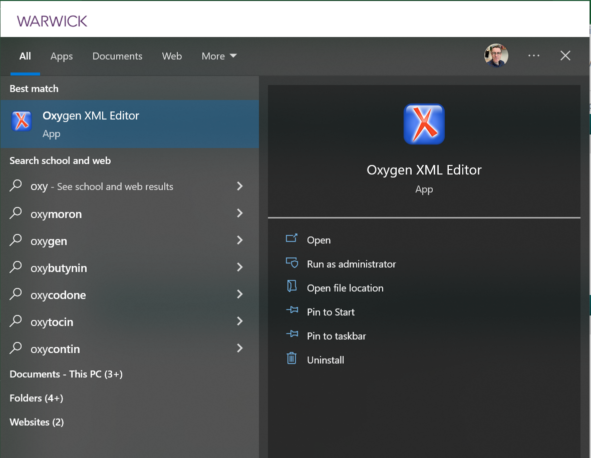
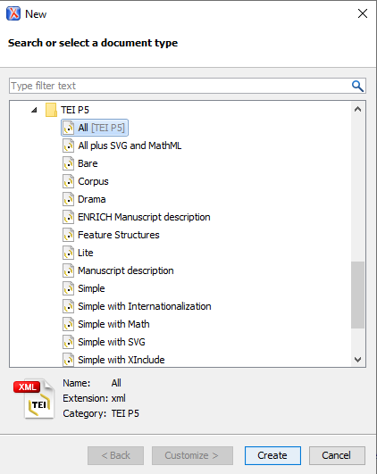
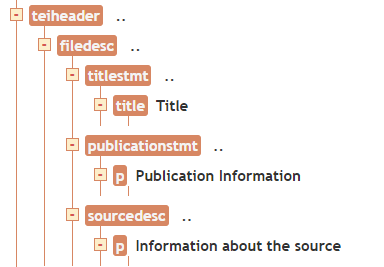
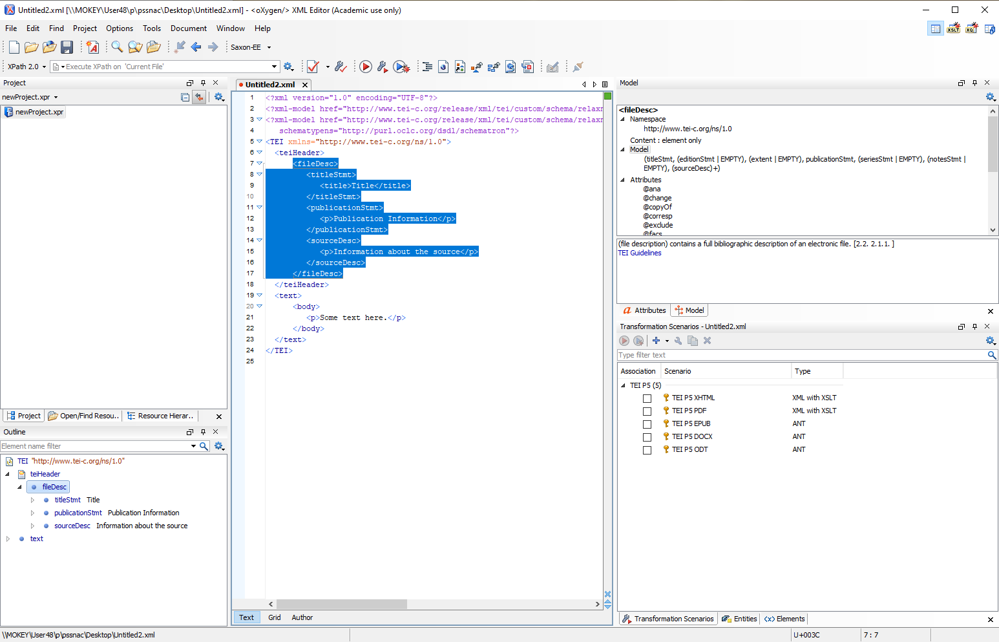
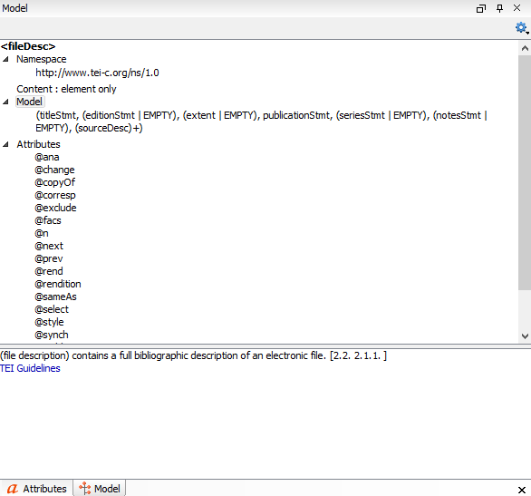

Become more familiar with the TEI XML file structure
Practice using the Oxygen XML editor
Start creating a TEI XML file for the Orwell Political Diaries 1940-41 found here
Primary source
The British Library has made photos of the Orwell Political Diaries available to us. There are 4 pages including the 17th, 21st, 24th and 27th of September 1940.
For those unfamiliar with George Orwell, there is an extensive wikipedia page about him. In the early 1940s, he was found unfit for any kind of military service, working in the Home Guard and living in Central London. The period is after he published Coming Up for Air (1939) and several years before his famous book Animal Farm (1945).
Source rights and usage
We are going to work on encoding pages from George Orwell’s political diary 1940-41. Several photographs of the diary are available to view on the British Library website. Note the usage terms from the website.
TEI XML provides us with a way to encode more information. We can include strike through, edits, indicates places, etc. All of this information may be useful for a richer interpretation and understanding of the diary. A better understanding of the diary helps us understand the time, the people and, I daresay, the humanity of the moment.
Oxygen XML
The instructions below are for opening and creating a TEI document using Oxygen XML.
Open the Oxygen XML program. If you are in room R0.39 then open the start menu type in oxygen. You should see the application.

Once open, select New Document. When you are faced with the document type select TEI P5 All and then click create.

Oxygen will load in a template document ready for you to use the TEI guidelines.
This line tells us we are using XML version 1 and the file encoding. This line is needed but it beyond the scope of our session to delve into all the details.
We are specifying the particular xml models we want to use. An XML model has a tree structure - that is, a particular <node> may by within other specific <nodes>.
Wait, what? That may sound confusing but let us look at the teiHeader section of our file.
<teiHeader> <fileDesc> <titleStmt> <title>Title</title> </titleStmt> <publicationStmt> <p>Publication Information</p> </publicationStmt> <sourceDesc> <p>Information about the source</p> </sourceDesc> </fileDesc></teiHeader>
As a tree, this section look like this.

Within the XML model, a teiHeader can contain several other nodes including fileDesc. In fileDesc, the titleStml, publicationStmt and sourceDesc are allowed. These links will take you to the TEI documentation which is available online. The remainder of the file contains the text node, within which is the body and in that is a paragraph.
The ruleset (guidelines) may seem restrictive, but it provides a standardised way to encode our text. We can also use the guidelines as prompts to consider what we might want to encode.
Helpful Oxygen XML
The Oxygen XML interface is designed to help you.
In the bottom left is a tree, much like the screenshot above. If you click on the a node name, such as fileDesc, all of the child nodes are selected (see below image).

In the top right are two tabs: attributes and model. The model tab shows the rules for the selected node. If we select the fileDesc node then we see a description of the node from the TEI guidelines, the possible child nodes (titleStmt, publicationStmt) and the possible attributes. An attribute is information attached to the node.

The attributes tab allows you to easily change an attribute of a node. More on that in the second activity.
In the Text tab (where the file text is shown) you can create a new node by opening a < bracket. Oxygen XML will then show you a list of the available nodes (keeping within the TEI rules). For instance, you can create a location node as a child node of p (paragraph).
Activity One
Goal
We want to have a version of Orwell’s diary entries in an XML format. In this first activity, we will create a file containing the Political Diary text with file information in the TEI header and structural information (paragraphs and page numbers).
Steps
Create a TEI P5 file (see above). Add to the file the file title, author, publication authority, source description and details of the project. Save the file.
Add the paragraphs and page numbers.
Helpful files and links
University of Warwick students can access diary page plain text here. You will need to put this text into a TEI XML file in Oxygen XML.
Each TEI element has documentation online. Guidance on interpreting the guidance is below. For this activity, you are encoding the position of paragraphs with the p element and page beginnings with the pb element. Note: the page break for page 55 will be <pb n=“55”/>.